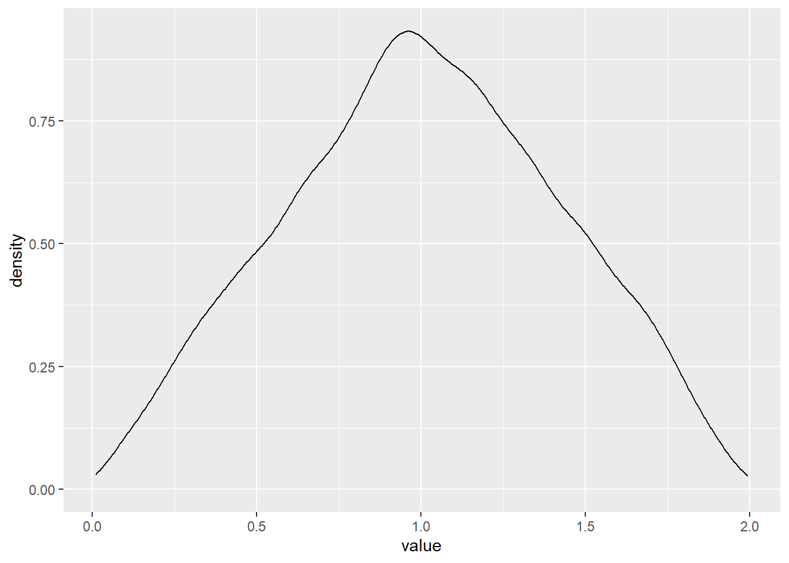
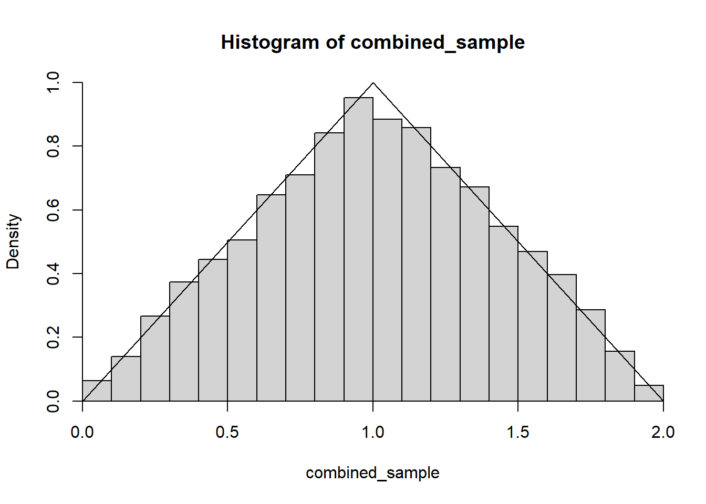
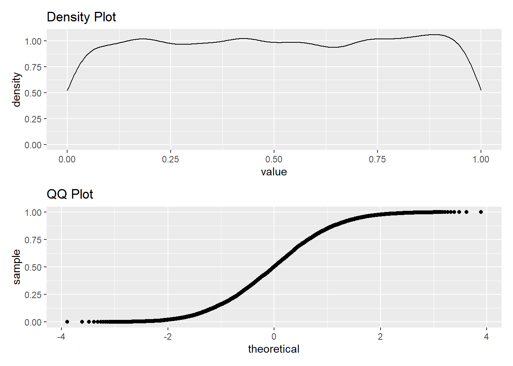
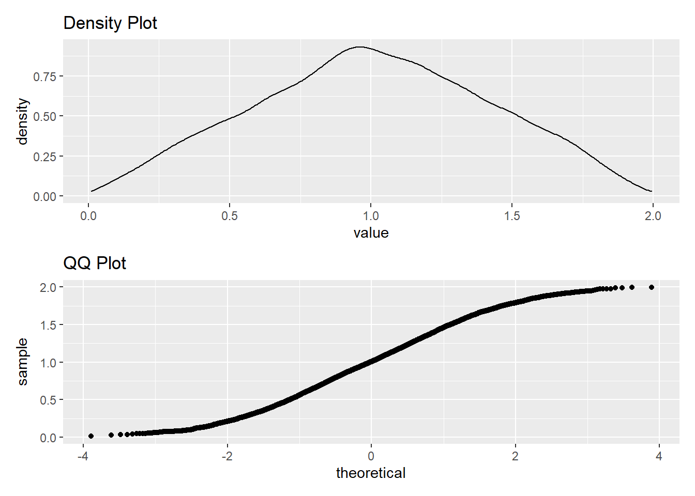
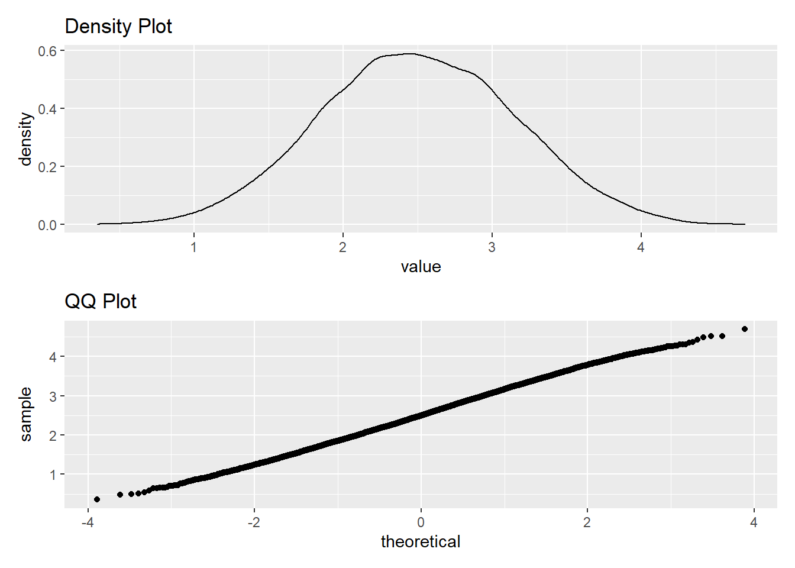
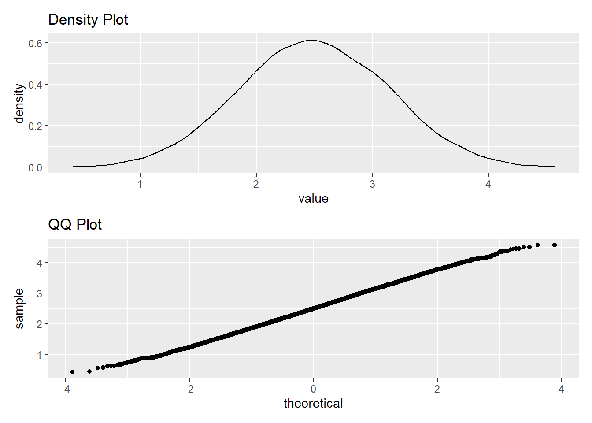

UW STATR 501A - Homework #4
Instructions
Please submit a single zipped folder with all associated files [text report (.pdf, .docx, .txt), R code (.R, .Rmd), data files (.csv, .xlsx, .txt)]. Upload the completed homework assignment into the Canvas drop-box.
Probability problems may be unintuitive - hence the emphasis on simulation. Please discuss the problems amongst yourselves on the forum, but make sure to submit your own work (code and text).
Problem #1 - Reading
Part a
Read the file lab4_corrected.html (under modules of the course site)
Part b
Read Ch. 1 Probability Models and Ch. 2 Random Variables and Distributions in Probability and Statistics.
Part c
Read Ch. 8 Probability Distributions in An Introduction to R.
Problem #2 - Random Variables I
Part a
Simulate 1000 numbers from the standard uniform distribution \(X \sim Unif(0,1)\), and report the sample standard deviation (\(s_{x}\)) of these numbers.
Part b
Write a function that returns \(s_{x}\) of \(n\) draws from a \(Unif(0,b)\) distribution, where \(b\) is the upper limit
[1] 158.5021Part c
Obtain the values \(s_{x}\) against values of \(b\) ranging from 1 to 10 (using any large value of \(n\) of your choosing). Is there a consistent pattern? Can you propose a model that predicts \(s_{x}\) with upper limit \(b\)?
[1] 0.2890430 0.5758418 0.8629290 1.1526412 1.4431247 1.7311781 2.0285057
[8] 2.3180415 2.5957688 2.8930982[1] -0.2867987[1] -0.2870872[1] -0.2897122[1] -0.2904836[1] 3.456[1] 2.88[1] 3.168The results sample standard deviation seems to increase by approximately 0.288 as the upper limit increases by 1. I would propose that the standard deviation could be predicted by multiplying the upper limit by 0.288.
Problem #3 - Random Variables II
Part a
Generate two vectors \(X_{1}\) and \(X_{2}\), each of which represents 10,000 draws from the \(Unif(0,1)\) distribution. Obtain the pairwise sum of these vectors (\(Y_{2} = X_{1} + X_{2}\)) and plot the density histogram of \(Y\).

Part b
Guess what the probability distribution function (p.d.f.) of \(Y_{2}\) might be (i.e. describe it mathematically with a pairwise function), and illustrate it with a line over the histogram.

Part c
Similarly, obtain \(Y_{5} = X_{1} + X_{2} + ... + X_{5}\) and \(Y_{10}\). Plot on a single 4x2 figure the respective histograms and qqnorm plots of \(X_{1}, Y_{2}, Y_{5}, Y_{10}\). What do you observe?




As more observations are taken from the normal distribution, the data becomes more normal (the QQ plot approaches a diagonal line with a positive slope). This is an example of the Central Limit Theorem.
Problem #4 - De Méré’s Wager I
Antoine Gombaud, a.k.a. the Chevalier de Méré (1607-1684) was a “gentleman gambler” (and amateur mathematician) in France. One game de Méré enjoyed playing (though it sounds awfully boring to me) would be to bet with even odds (i.e. lose a franc if you lose, win a franc if you win) on getting at least one six on four rolls of a fair die. He reasoned that the chance of getting a six in one roll of a die is \(1/6\), so the chance of getting one six in four would be \(4/6=2/3\).
Part a
Write a function DeMereA(n) that simulates this game, i.e. takes a certain number \((n)\) of rolls of a die and returns a TRUE if there is at least one six and a FALSE if there isn’t.
Part b
Simulate 1000 of these games and compute the number of times he wins.
[1] 151Part c
De Méré’s reasoning was faulty, but he still won a lot of money playing this (frankly, kind of stupid) game. What is the actual probability of getting at least one six in four rolls? (Use math or simulate in R)
[1] 0.5177469Problem #5 - De Méré’s Wager II
Despite the faulty reasoning, de Méré actually won a lot of money playing this game but became bored of it. So, to make things mildly more interesting, he devised a second game. In this one, he would wager - again with even odds - on getting at least one double six on 24 rolls of a pair of dice. He reasoned correctly that the chance of getting a double six in rolling a pair of dice is \(1/36\). So he assumed that in 24 rolls of a pair of dice, the chance of getting one double six would be \(24/36=2/3\).
Part a
Write an analogous function DeMereB(n) that simulates the 24 roll game with double dice.
[1] 0Part b
Simulate 1000 of these games and compute the number of victories.
[1] 654Part c
Again, de Méré’s reasoning was faulty. Compute the actual probability of getting at least one double six in twenty four rolls. (Use math or simulate in R)
[1] 0.4914039Based on more empirical data (i.e. losing a lot of money), he knew something was not quite right in the second game of dice. So he challenged his famous friend Blaise Pascal to help him find an explanation. In a series of letters between Pascal and Pierre de Fermat, not only did de Méré learn not to make naive calculations, but the foundation was laid for the theory of probability.
Problem #6 - Card Playing
A standard playing deck of 52 cards consists of 13 unique valued cards (2 to 10, and four face cards: the Ace, Jack, Queen, and King) each in 4 different suits (hearts, diamonds, clubs, and spades). You can generate a complete deck of cards in R using something like the following code, although I recommend you simplify this deck to just what’s necessary to simulate each question.
CardNames <- c(2:10, "Jack", "Queen", "King", "Ace")
Deck <- c(paste(CardNames, "of Diamonds"),
paste(CardNames, "of Hearts"),
paste(CardNames, "of Clubs"),
paste(CardNames, "of Spades"))
rm(CardNames)
print(c(head(Deck), tail(Deck))) [1] "2 of Diamonds" "3 of Diamonds" "4 of Diamonds" "5 of Diamonds"
[5] "6 of Diamonds" "7 of Diamonds" "9 of Spades" "10 of Spades"
[9] "Jack of Spades" "Queen of Spades" "King of Spades" "Ace of Spades" And then we can “draw” five cards simply with: sample(Deck, 5, replace = TRUE).
Part a
How many possible hands of five unique cards can be drawn from a deck of cards? (Note: cards are drawn without replacement)
[1] 2598960Part b
In poker, a flush is defined as five cards of the same suit, regardless of the value of the card. Write a function called IsFlush() that draws five cards from a deck, determines whether or not it is a flush, and returns the appropriate logical value.
[1] FALSEPart c
Simulate this process 10,000 times and count how many times you draw a flush. What is the approximate probability of a flush based on this experiment? (Note: this can be approached with a loop or apply() on a matrix of decks)
[1] 29Based on this experiment, the chance of drawing a flush is 0.0022%. My function showed a total of 22 flushes in 10,000 simulations.
Part d
A straight is a sequence of five cards in numerical order (note: for simplicity we define Ace = 13 only. So Ace-2-3-4-5 is not considered a straight). Repeate exercises (b) and (c) for the straight (i.e. create a function IsStraight() and repeat the experiment 10,000 times)
[1] 294Part e
Based on these results, which is the more likely hand to be dealt in a game of poker?
My function returned 252 straights in 10,000 draws (an approximate probability of 0.0252%). It’s much more likely that you will get a straight than a flush.
Problem #7 - Airplane Functioning
You are planning on taking a flight on Epsilon Airlines across the Pacific Ocean. To have a successful flight, 100 different components on the plane must ALL function correctly. Each of these components has a probability 0.001 of failing.
Part a
Use the rbinom() function to simulate a flight on Epsilon airline by creating a vector of 100 elements which succeed or fail with the appropriate probability.
Part b
Use the rbinom() function in a slightly different way to produce a vector of length 1,000,000 in which each element is the number of components that fail in each flight. Use this vector to produce an estimate of the probability of failure for the plane.
Part c
Based on this result, would you take a flight on Epsilon airlines? Why or why not?
No, definitely not. The probability of something going wrong with the plane is 0.095226. That’s well above my level of risk tolerance.
Part d
Using dnorm(), calculate the exact probability that the flight will not be successful. What important assumption are you making in this calculation (and the previous simulations)?
[1] 0.09520785The major assumption that we have made in this problem is that the failure of one part will not cause the failure of other parts. We are assuming that all parts in this airplane are independent of each other.